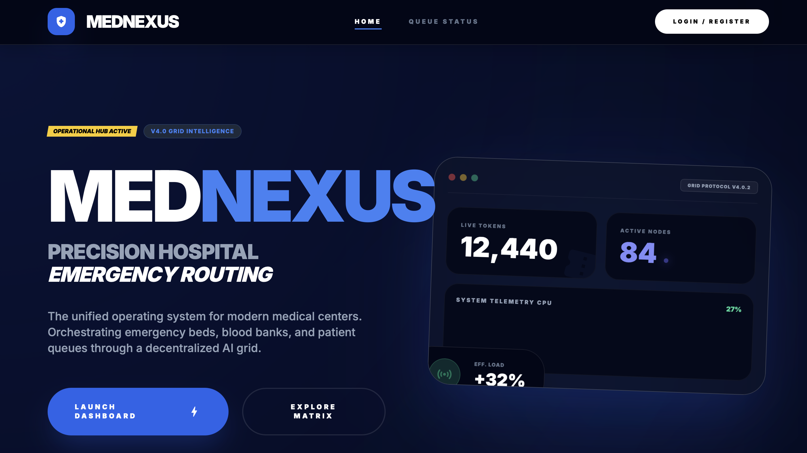

01 / FEATURED BUILD
MEDNEXUS
Unified Healthcare GatewayProblem
Siloed diagnostic networks delay patient profiling and query speeds in clinical emergency scenarios.
Solution
A unified FHIR-compliant electronic health records gateway that aggregates patient data with sub-100ms fetch times.
Challenges & Resolution
Legacy databases are slow and rigid. Handled by creating optimized SQL views and implementing a write-through Redis cache layer.
84ms
Avg API Latency
99.98%
Gateway Uptime
